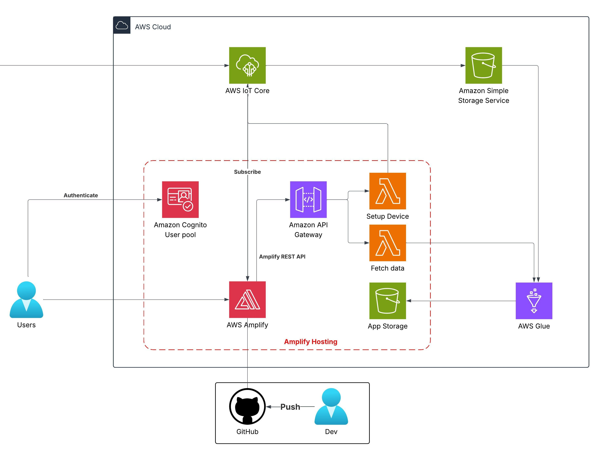

Bản đề xuất
KenFi – Nền tảng thương mại và thành viên thể hình AI
Nền tảng AWS Serverless Stack thống nhất dành cho Thành viên, Thương mại điện tử và Huấn luyện Thể hình AI
1. Tóm tắt điều hành
KenFi là nền tảng số hóa dành cho các phòng gym nội bộ hoặc chuỗi gym quy mô vừa và nhỏ tại Việt Nam, kết hợp ba chức năng chính trên một hệ thống duy nhất: bán gói tập trực tuyến, bán sản phẩm bổ trợ thể hình (whey, creatine, phụ kiện…), và hỗ trợ dinh dưỡng – AI tư vấn tập luyện.
Khách hàng có thể đăng ký gói tập trực tuyến, thanh toán ngay bằng VNPay hoặc PayPal phiên bản thử, và nhận Mã Khách Hàng (Customer ID) hoặc QR Code để quét khi đến quầy lễ tân. Mọi thao tác đều thực hiện qua web – không cần cài ứng dụng riêng.
Về phía vận hành, KenFi giúp chủ phòng gym tự động hóa khâu đăng ký – gia hạn – check-in, giảm tải công việc cho lễ tân, đồng thời chuẩn hóa danh tính khách hàng thông qua hệ thống mã hóa thống nhất trên nền tảng AWS.
Hệ thống được triển khai dựa trên kiến trúc serverless của AWS, đảm bảo chi phí vận hành cực thấp (ước tính chỉ ~0.7 USD/tháng, tương đương 8.40 USD cho 12 tháng) nhưng vẫn đủ khả năng mở rộng lên hàng nghìn hội viên nếu cần.
KenFi không chỉ phục vụ việc quản lý hội viên, mà còn đóng vai trò nền tảng thương mại điện tử thu nhỏ dành riêng cho gym, đồng thời tích hợp công cụ tính dinh dưỡng theo bảng USDA và chatbot AI với phong cách “Bro thân thiện – nhưng nói chuyên môn thì nghiêm túc”.
2. Tuyên bố vấn đề
Vấn đề hiện tại
Hầu hết các phòng tập thể dục địa phương ở Việt Nam vẫn phụ thuộc nhiều vào các quy trình thủ công. Tư cách thành viên thường được theo dõi trên giấy hoặc tệp Excel cơ bản. Khách hàng phải đến trực tiếp quầy để đăng ký hoặc gia hạn, gây chậm trễ, chen chúc trong giờ cao điểm. Không có tùy chọn tự phục vụ để mua tư cách thành viên hoặc thực phẩm bổ sung trực tuyến. Danh tính khách hàng không được chuẩn hóa—mỗi chi nhánh hoặc nhân viên có thể sử dụng các định dạng khác nhau, dẫn đến nhầm lẫn và hồ sơ không nhất quán. Ngoài ra, tư vấn dinh dưỡng và calo thường không chính thức, tùy thuộc vào bất kỳ huấn luyện viên nào có sẵn, dẫn đến lời khuyên không nhất quán.
Trải nghiệm kỹ thuật số mong đợi mà khách hàng mong muốn:
Các thành viên phòng tập thể dục hiện đại mong đợi mức độ tiện lợi tương tự mà họ nhận được từ thương mại điện tử hoặc ngân hàng trực tuyến. Họ muốn đăng ký gói đào tạo trực tiếp trên điện thoại, thanh toán ngay lập tức bằng các cổng thanh toán phổ biến như VNPay hoặc PayPal và nhận mã QR thành viên hoặc ID khách hàng ngay lập tức. Họ muốn được hướng dẫn rõ ràng về lượng calo nạp vào và sử dụng bổ sung mà không cần phải liên tục hỏi quầy lễ tân. Họ cũng mong muốn hệ thống nhận ra họ ngay lập tức khi nhận phòng mà không lặp lại thông tin cá nhân.
Khoảng cách trên thị trường:
Trong khi các chuỗi thể dục lớn ở Việt Nam như California Fitness hay CityGym có hệ thống kỹ thuật số một phần, không có nền tảng thống nhất, giá cả phải chăng để các phòng tập thể dục vừa và nhỏ hoạt động với cùng mức độ chuyên nghiệp. Mua các hệ thống làm sẵn từ các nhà cung cấp nước ngoài rất tốn kém và không được tối ưu hóa cho quy trình làm việc của Việt Nam. Hầu hết các sản phẩm phần mềm “quản lý phòng tập thể dục” hiện nay chỉ tập trung vào việc theo dõi điểm danh, không tích hợp thương mại điện tử, hướng dẫn dinh dưỡng hoặc hỗ trợ dựa trên AI.
KenFi là giải pháp
KenFi thu hẹp khoảng cách này bằng cách cung cấp nền tảng thành viên và thương mại thể dục do AWS cung cấp được thiết kế riêng cho các phòng tập thể dục địa phương. Nó tập trung đăng ký thành viên, thanh toán kỹ thuật số, bán thực phẩm bổ sung, tính toán dinh dưỡng và nhận dạng khách hàng vào một hệ sinh thái thân thiện duy nhất. Khách hàng nhận được ID khách hàng hoặc Mã QR duy nhất ngay sau khi mua gói hàng, có thể hiển thị cho nhân viên lễ tân để nhận biết ngay lập tức. Chatbot AI tích hợp hoạt động như một người anh em phòng tập thể dục thân thiện cho các câu hỏi thông thường, nhưng chuyển sang chế độ chuyên gia nghiêm túc khi thảo luận về các chủ đề kỹ thuật thể dục. Nền tảng này cho phép các phòng tập thể dục nhỏ hoạt động với sự chuyên nghiệp của các chuỗi thể dục lớn mà không yêu cầu cơ sở hạ tầng hoặc bảo trì trả trước nặng nề.
3. Kiến trúc giải pháp
Nền tảng áp dụng kiến trúc AWS Serverless để quản lý dữ liệu từ 5 trạm dựa trên Raspberry Pi, có thể mở rộng lên 15 trạm. Dữ liệu được tiếp nhận qua AWS IoT Core, lưu trữ trong S3 data lake và xử lý bởi AWS Glue Crawlers và ETL jobs để chuyển đổi và tải vào một S3 bucket khác cho mục đích phân tích. Lambda và API Gateway xử lý bổ sung, trong khi Amplify với Next.js cung cấp bảng điều khiển được bảo mật bởi Cognito.


Dịch vụ AWS sử dụng
- AWS IoT Core: Tiếp nhận dữ liệu MQTT từ 5 trạm, mở rộng lên 15.
- AWS Lambda: Xử lý dữ liệu và kích hoạt Glue jobs (2 hàm).
- Amazon API Gateway: Giao tiếp với ứng dụng web.
- Amazon S3: Lưu trữ dữ liệu thô (data lake) và dữ liệu đã xử lý (2 bucket).
- AWS Glue: Crawlers lập chỉ mục dữ liệu, ETL jobs chuyển đổi và tải dữ liệu.
- AWS Amplify: Lưu trữ giao diện web Next.js.
- Amazon Cognito: Quản lý quyền truy cập cho người dùng phòng lab.
Thiết kế thành phần
- Thiết bị biên: Raspberry Pi thu thập và lọc dữ liệu cảm biến, gửi tới IoT Core.
- Tiếp nhận dữ liệu: AWS IoT Core nhận tin nhắn MQTT từ thiết bị biên.
- Lưu trữ dữ liệu: Dữ liệu thô lưu trong S3 data lake; dữ liệu đã xử lý lưu ở một S3 bucket khác.
- Xử lý dữ liệu: AWS Glue Crawlers lập chỉ mục dữ liệu; ETL jobs chuyển đổi để phân tích.
- Giao diện web: AWS Amplify lưu trữ ứng dụng Next.js cho bảng điều khiển và phân tích thời gian thực.
- Quản lý người dùng: Amazon Cognito giới hạn 5 tài khoản hoạt động.
4. Triển khai kỹ thuật
Các giai đoạn triển khai
Nền tảng KenFi sẽ được triển khai trong các giai đoạn được xác định rõ ràng để đảm bảo tạo mẫu nhanh chóng trong khi vẫn duy trì khả năng mở rộng lâu dài.
Giai đoạn 1 – Lập kế hoạch kiến trúc và thiết lập dịch vụ AWS. Xác định chính xác các tài nguyên AWS cần thiết bao gồm Amplify, Cognito User Pool, API Gateway, hàm Lambda, bảng DynamoDB và vùng lưu trữ S3. Thiết lập quy ước đặt tên, lựa chọn khu vực và vai trò IAM.
Giai đoạn 2 – Quy trình làm việc thành viên cốt lõi. Triển khai quy trình đăng ký tài khoản, mua gói đào tạo, tạo ID khách hàng và mã QR cũng như lưu trữ hiệu lực thành viên trong DynamoDB.
Giai đoạn 3 – Bổ sung mô-đun thương mại. Xây dựng danh mục sản phẩm, quy trình thêm vào giỏ hàng, thanh toán qua VNPay hoặc PayPal sandbox và theo dõi lịch sử đơn hàng.
Giai đoạn 4 – Tích hợp máy tính dinh dưỡng. Kết nối các hàm Lambda với API Trung tâm FoodData của USDA, cho phép người dùng nhập các mặt hàng thực phẩm và nhận phân tích calo và vĩ mô.
Giai đoạn 5 – Chatbot AI. Tích hợp mô hình LLM nhẹ chạy trên Lambda hoặc tùy chọn thông qua Amazon Bedrock. Định cấu hình chuyển đổi hành vi giữa chế độ “anh em phòng tập thể dục” thông thường và chế độ chuyên gia nghiêm túc. Dịch vụ AWS và trách nhiệm chính
AWS Amplify lưu trữ giao diện người dùng Next.js và tự động hóa CI/CD từ GitHub hoặc CodeCommit.
Amazon Cognito quản lý đăng ký, đăng nhập, đặt lại mật khẩu và mã thông báo danh tính.
Amazon API Gateway hiển thị các điểm cuối HTTPS bảo mật cho tất cả các hành động của ứng dụng.
Các hàm AWS Lambda xử lý logic kinh doanh như mua thành viên, tạo mã QR và tra cứu dinh dưỡng.
Amazon DynamoDB lưu trữ hồ sơ khách hàng, mã thông báo thành viên, hồ sơ giao dịch và hàng tồn kho sản phẩm.
Amazon S3 lưu trữ các tài sản công khai như hình ảnh QR, hình ảnh biểu ngữ và thẻ thành viên có thể tải xuống.
Bạn có thể sử dụng Amazon SES tùy chọn để gửi email xác nhận có tệp đính kèm mã QR.
Quy trình tạo mã QR
Khi giao dịch mua được xác nhận, Lambda sẽ tạo một chuỗi thành viên duy nhất bằng cách sử dụng tiền tố như KF-YYYYMM-XXXX. Mã QR được hiển thị thông qua thư viện tạo QR, được lưu trữ tạm thời trong bộ nhớ và được lưu dưới dạng tệp hình ảnh trong S3 theo đường dẫn như /qr-codes/customer-id.png. URL được trả về giao diện người dùng và tùy chọn gửi qua email cho khách hàng.
Kết nối cổng thanh toán
Tài khoản VNPay và PayPal sandbox được sử dụng trong quá trình phát triển. Giao diện người dùng chuyển hướng người dùng đến URL thanh toán thích hợp. Sau khi hoàn tất, VNPay hoặc PayPal trả về callback đến API Gateway với trạng thái giao dịch. Một hàm Lambda chuyên dụng xác minh chữ ký thanh toán và đánh dấu tư cách thành viên là đang hoạt động.
Chiến lược triển khai
Toàn bộ cơ sở hạ tầng có thể được cung cấp thủ công thông qua Bảng điều khiển AWS trong giai đoạn nguyên mẫu. Sau khi ổn định, cơ sở hạ tầng dưới dạng mã sẽ được áp dụng bằng AWS CDK hoặc CloudFormation để triển khai có thể tái tạo trên các môi trường. Phiên bản cho Lambda và chiến lược khôi phục sẽ được thực thi.
Kiểm tra và kiểm soát chất lượng
Kiểm thử đơn vị được thực hiện trên từng hàm Lambda một cách độc lập. Tích hợp giao diện người dùng được xác minh thông qua các bản dựng xem trước Amplify. Thử nghiệm toàn diện từ đầu đến cuối được mô phỏng với một người dùng giả đăng ký, mua, nhận mã QR và đăng ký. Kiểm tra thâm nhập tập trung vào kiểm soát truy cập và ngăn chặn giả mạo thanh toán.
5. Lộ trình & Mốc triển khai
- Trước thực tập (Tháng 0): 1 tháng lên kế hoạch và đánh giá trạm cũ.
- Thực tập (Tháng 1–3):
- Tháng 1: Học AWS và nâng cấp phần cứng.
- Tháng 2: Thiết kế và điều chỉnh kiến trúc.
- Tháng 3: Triển khai, kiểm thử, đưa vào sử dụng.
- Sau triển khai: Nghiên cứu thêm trong vòng 1 năm.
6. Ước tính ngân sách
Có thể xem chi phí trên AWS Pricing Calculator
Hoặc tải tệp ước tính ngân sách.
Chi phí hạ tầng
- AWS Lambda: 0,00 USD/tháng (1.000 request, 512 MB lưu trữ).
- S3 Standard: 0,15 USD/tháng (6 GB, 2.100 request, 1 GB quét).
- Truyền dữ liệu: 0,02 USD/tháng (1 GB vào, 1 GB ra).
- AWS Amplify: 0,35 USD/tháng (256 MB, request 500 ms).
- Amazon API Gateway: 0,01 USD/tháng (2.000 request).
- AWS Glue ETL Jobs: 0,02 USD/tháng (2 DPU).
- AWS Glue Crawlers: 0,07 USD/tháng (1 crawler).
- MQTT (IoT Core): 0,08 USD/tháng (5 thiết bị, 45.000 tin nhắn).
Tổng: 0,7 USD/tháng, 8,40 USD/12 tháng
- Phần cứng: 265 USD một lần (Raspberry Pi 5 và cảm biến).
7. Đánh giá rủi ro
Ma trận rủi ro
- Mất mạng: Ảnh hưởng trung bình, xác suất trung bình.
- Hỏng cảm biến: Ảnh hưởng cao, xác suất thấp.
- Vượt ngân sách: Ảnh hưởng trung bình, xác suất thấp.
Chiến lược giảm thiểu
- Mạng: Lưu trữ cục bộ trên Raspberry Pi với Docker.
- Cảm biến: Kiểm tra định kỳ, dự phòng linh kiện.
- Chi phí: Cảnh báo ngân sách AWS, tối ưu dịch vụ.
Kế hoạch dự phòng
- Quay lại thu thập thủ công nếu AWS gặp sự cố.
- Sử dụng CloudFormation để khôi phục cấu hình liên quan đến chi phí.
8. Kết quả kỳ vọng
Cải tiến kỹ thuật: Dữ liệu và phân tích thời gian thực thay thế quy trình thủ công. Có thể mở rộng tới 10–15 Phòng.
Giá trị dài hạn: Nền tảng dữ liệu 1 năm cho nghiên cứu AI, có thể tái sử dụng cho các dự án tương lai.